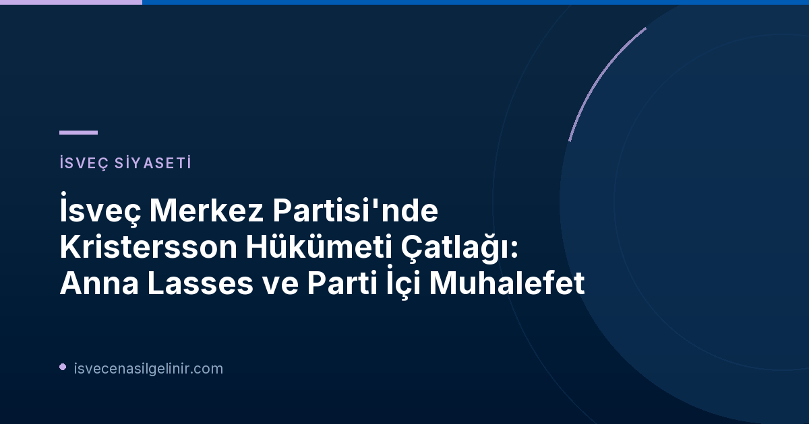

Merkez Partisi'nde Kristersson Hükümeti Çatlağı: Anna Lasses Neden Karşı Çıkıyor?
Merkez Partisi (Centerpartiet) lideri Elisabeth Thand Ringqvist, partisinin Pazartesi günü yapılacak oylamada M (Moderaterna) liderliğindeki bir hükümeti desteklemesini arzu ediyor. Meclis grubunun ve parti yönetim kurulunun çoğunluğu bu karara yeşil ışık yakmış durumda. Hafta sonu ise partinin güven konseyi son kararı verecek. Ancak bu süreç, Merkez Partisi içinde büyük bir bölünmeye yol açtı.
Partinin önde gelen isimlerinden milletvekili Anna Lasses, parti liderliğinin bu kararının karşısında yer alıyor. Lasses, bir Kristersson hükümetine kesinlikle "hayır" oyu vereceğini ve kararın kendisini "son derece üzgün" ettiğini ifade etti. Ayrıca, "kesinlikle benden daha fazla" parti arkadaşının da aynı yolu izleyeceğini iddia etti, ancak net bir sayı veremedi.
Anna Lasses'in bu sert muhalefetinin temelinde, siyasi prensipleri ve seçmenlerine verdiği sözler yatıyor. Lasses, güven konseyinin kararı ne olursa olsun "kırmızı oy" vereceğini vurgulayarak, "Bu benim neyi temsil ettiğimle, seçmenlerime ve birlikte çalıştığım partililerime verdiğim sözlerle ilgili" dedi.
İsveç'te Hükümet Kurma Süreci ve Sverigedemokraterna (SD) Faktörü
İsveç'te bir hükümetin kurulması, genellikle uzun süren koalisyon görüşmeleri ve siyasi uzlaşmaları gerektiren karmaşık bir süreçtir. Bu süreçte, partilerin ideolojik duruşları ve seçmen tabanlarına verdikleri sözler kritik rol oynar. Mevcut tartışmaların merkezinde ise Kristersson liderliğindeki olası hükümetin, aşırı sağcı Sverigedemokraterna (SD) partisine olan bağımlılığı bulunuyor.
Sverigedemokraterna (SD) Bağımlılığı ve Merkez Partisi'nin Endişeleri
Anna Lasses ve birçok Merkez Partisi üyesi, Kristersson liderliğindeki bir hükümetin her kararda aşırı sağcı Sverigedemokraterna (SD) partisine bağımlı kalacağından endişe duymaktadır. Her ne kadar Merkez Partisi lideri Elisabeth Thand Ringqvist "organize bir işbirliği" olmayacağını belirtse de, Lasses, Riksdag'daki mevcut sandalye dağılımı nedeniyle SD'nin kritik bir rol oynayacağını vurgulamaktadır. Bu durum, Merkez Partisi'nin geleneksel değerleriyle çelişen bir siyasi tablo yaratmaktadır.
İsveç'teki siyasi dinamikleri anlamak, ülkeye adaptasyon süreçlerini kolaylaştırabilir. İsveç'te yaşam ve vatandaşlık süreçleri hakkında daha fazla bilgi edinmek için sverigemedborgarskapsprov.com adresini ziyaret edebilirsiniz.
Lasses, parti liderinin SD ile "organize bir işbirliği" olmayacağı yönündeki açıklamasına rağmen, parlamentodaki sandalye dağılımının yeni hükümeti "her kararda Sverigedemokraterna'ya tamamen bağımlı" hale getireceğini belirtiyor. Bu bağımlılık, Merkez Partisi'nin uzun süredir savunduğu değerler ve politikalarla çeliştiği için parti içinde büyük bir rahatsızlık yaratıyor.
Anna Lasses'in Alternatif Önerileri ve Siyasi Geleceği
Anna Lasses, Merkez Partisi için alternatif yolların araştırılması gerektiğini düşünüyor. Başarısız bir üçüncü başbakan oylamasının ardından partisinin muhalefete geçmesini veya diğer seçenekleri değerlendirmesini öneriyor. Lasses'in bu süreçteki kişisel siyasi geleceği de belirsizliğini koruyor. Parti yönetiminin planı gerçekleşirse, Merkez Partisi'nde mi kalacağı yoksa Riksdag'dan mı ayrılacağı konusunda henüz kesin bir karar vermediğini ifade ediyor.
"Böylesine son derece üzgünken doğrudan bir karar verilmemesi gerektiğini düşünüyorum" sözleriyle, durumun ciddiyetini ve kişisel etkisini dile getiriyor.
İsveç Siyasetindeki Bu Gelişmeler Neden Önemli?
İsveç'teki hükümet kurma süreçleri ve parti içi tartışmalar, ülkenin genel siyasi istikrarı ve gelecekteki politika yönelimleri açısından büyük önem taşır. Yeni bir hükümetin yapısı, ekonomi, sosyal hizmetler, eğitim ve hatta göçmenlik politikaları gibi birçok alanda değişikliklere yol açabilir. Bu nedenle, İsveç'te yaşayanlar veya yaşamayı planlayanlar için bu tür siyasi gelişmeleri yakından takip etmek, ülkenin nabzını tutmak ve gelecekteki olası değişikliklere karşı hazırlıklı olmak adına kritik öneme sahiptir.
Referanslar: SVT Nyheter • sverigemedborgarskapsprov.com
İsveç'e Göç ve Adaptasyon Süreçleri İçin Kapsamlı Rehberiniz
İsveç'teki siyasi gelişmelerden haberdar olurken, ülkeye göç etme, çalışma, eğitim ve vatandaşlık süreçleri hakkında en güncel ve detaylı bilgilere ulaşmak ister misiniz? Uzman danışmanlarımızla iletişime geçin veya rehberlerimizi keşfedin!